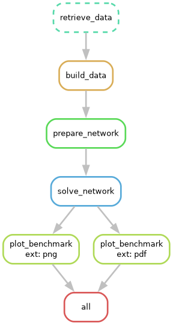
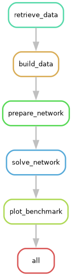
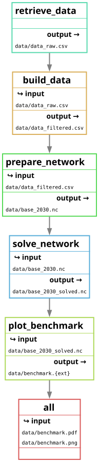

Workshop 4 (CBA)#
import os
import shutil
import zipfile
from datetime import datetime
from pathlib import Path
from urllib.request import urlretrieve
import cartopy.crs as ccrs
import matplotlib.pyplot as plt
import pandas as pd
import pypsa
from IPython.display import SVG, Code, IFrame, Image, display
from pdf2image import convert_from_path
from pdf2image.exceptions import PDFPageCountError
from pypsa.plot.maps.static import add_legend_lines
from pypsa_explorer import create_app
pypsa.set_option("params.statistics.nice_names", True)
pypsa.set_option("params.statistics.drop_zero", True)
pypsa.set_option("params.statistics.round", 3)
plt.rcParams["figure.figsize"] = [14, 7]
clip = 1 # TWh
Reminder: The Snakemake tool#
The Snakemake workflow management system is a tool to create reproducible and scalable data analyses.
Workflows are described via a human readable, Python based language. They can be seamlessly scaled to server, cluster, grid, and cloud environments, without the need to modify the workflow definition.
Snakemake follows the GNU Make paradigm: workflows are defined in terms of so-called rules that specify how to create a set of output files from a set of input files. Dependencies between the rules are determined automatically, creating a DAG (directed acyclic graph) of jobs that can be automatically parallelized.
Note
Documentation for this package is available at https://snakemake.readthedocs.io/. You can also check out a slide deck Snakemake Tutorial by Johannes Köster (2024).
Mölder, F., Jablonski, K.P., Letcher, B., Hall, M.B., Tomkins-Tinch, C.H., Sochat, V., Forster, J., Lee, S., Twardziok, S.O., Kanitz, A., Wilm, A., Holtgrewe, M., Rahmann, S., Nahnsen, S., Köster, J., 2021. Sustainable data analysis with Snakemake. F1000Res 10, 33.
A minimal Snakemake example#
To check out how this looks in practice, we’ve prepared a minimal Snakemake example workflow that processes some data. The minimal workflow consists of the following rules:
retrieve_databuild_dataprepare_networksolve_networkplot_benchmarkall
These rules are illustrative and mimic the Open-TYNDP structure and nomenclature.

We have already loaded the raw data file used in this minimal example into our working directory.
As you can see, the plot_benchmark rule will be called twice with two different filename extensions. For this, we are taking advantage of the concept of wildcards (ext). Snakemake will automatically resolve the wildcards using the dependency graph. In this case, the all rule takes as input both a png and a pdf figure which propagates back throughout the workflow.
The Snakefile and rules#
The rules need to be defined in a so-called Snakefile that sits in your current working directory. For our minimal example the Snakefile looks like this:
Code(filename="Snakefile", language="Python")
# SPDX-FileCopyrightText: Open Energy Transition gGmbH
#
# SPDX-License-Identifier: MIT
from pathlib import Path
rule all:
input:
"data/benchmark.png",
"data/benchmark.pdf"
rule retrieve_data:
output:
"data/data_raw.csv"
shell:
"wget -O {output} https://storage.googleapis.com/open-tyndp-data-store/workshop-02/data_raw.csv"
rule build_data:
input:
"data/data_raw.csv"
output:
"data/data_filtered.csv"
script:
"scripts/build_data.py"
rule prepare_network:
input:
"data/data_filtered.csv"
output:
"data/base_2030.nc"
script:
"scripts/prepare_network.py"
rule solve_network:
input:
"data/base_2030.nc"
output:
"data/base_2030_solved.nc"
shell:
"cp {input} {output}"
rule plot_benchmark:
input:
"data/base_2030_solved.nc"
output:
"data/benchmark.{ext}"
run:
Path(output[0]).touch()
You can check out the scripts under scripts. You will see that they are simplistic and only serve an illustrative purpose.
You can also observe how the plot_benchmark rule is defined to take advantage of the wildcards. This reduces the redundancy in the Snakefile. Wildcards are defined between { } in the rule definition.
Calling a workflow#
You can trigger the workflow by specifying a target file, like data/benchmark.pdf, or any intermediate file:
snakemake -call data/benchmark.pdf
Alternatively, you can also execute the workflow by calling a rule that produces an intermediate file:
snakemake -call build_data
NOTE: You cannot call a rule that includes a wildcard without specifying what the wildcard should be filled with. Otherwise, Snakemake will not know what to propagate back.
Or you can call the common rule all which can be used to execute the entire workflow. It takes the final workflow output as its input and thus requires all previous dependent rules to be run as well:
snakemake -call all
Because we defined the all rule as first in the Snakefile, this rule is assumed to be the default and the following also works:
snakemake -call
A very important feature is the -n flag which executes a dry-run. It is recommended to always first execute a dry-run before the actual execution of a workflow. This simply prints out the DAG of the workflow to investigate without actually executing it.
Let’s try this out and investigate the output:
! snakemake -call -n
SNAKEMAKE
=========
Date: 2026-06-05 11:08:18
Workflow ID: aea132b3-acd7-45d7-9f72-94fecb5dd279
Platform: Linux-6.17.0-1015-azure-x86_64-with-glibc2.39
Host: runnervm3jyl0
User: runner
Snakemake version: 9.22.0
Python version: 3.13.13 | packaged by conda-forge | (main, Apr 8 2026, 02:00:33) [GCC 14.3.0]
Command: /home/runner/miniconda3/envs/open-tyndp-workshops/bin/snakemake -call -n
Snakefile: /home/runner/work/open-tyndp-workshops/open-tyndp-workshops/open-tyndp-workshops/Snakefile
Base directory: /home/runner/work/open-tyndp-workshops/open-tyndp-workshops/open-tyndp-workshops
Run directory: /home/runner/work/open-tyndp-workshops/open-tyndp-workshops/open-tyndp-workshops
Working directory: /home/runner/work/open-tyndp-workshops/open-tyndp-workshops/open-tyndp-workshops
Config file(s): []
Config MD5: 99914b932bd37a50b983c5e7c90ae93b
Building DAG of jobs...
Job stats:
job count
--------------- -------
build_data 1
prepare_network 1
solve_network 1
plot_benchmark 2
all 1
total 6
[Fri Jun 5 11:08:18 2026]
rule build_data:
input: data/data_raw.csv
output: data/data_filtered.csv
jobid: 4
reason: Missing output files: data/data_filtered.csv
resources: tmpdir=/tmp
[Fri Jun 5 11:08:18 2026]
rule prepare_network:
input: data/data_filtered.csv
output: data/base_2030.nc
jobid: 3
reason: Missing output files: data/base_2030.nc; Input files updated by another job: data/data_filtered.csv
resources: tmpdir=/tmp
[Fri Jun 5 11:08:18 2026]
rule solve_network:
input: data/base_2030.nc
output: data/base_2030_solved.nc
jobid: 2
reason: Missing output files: data/base_2030_solved.nc; Input files updated by another job: data/base_2030.nc
resources: tmpdir=/tmp
[Fri Jun 5 11:08:18 2026]
rule plot_benchmark:
input: data/base_2030_solved.nc
output: data/benchmark.png
jobid: 1
reason: Missing output files: data/benchmark.png; Input files updated by another job: data/base_2030_solved.nc
wildcards: ext=png
resources: tmpdir=/tmp
[Fri Jun 5 11:08:18 2026]
rule plot_benchmark:
input: data/base_2030_solved.nc
output: data/benchmark.pdf
jobid: 6
reason: Missing output files: data/benchmark.pdf; Input files updated by another job: data/base_2030_solved.nc
wildcards: ext=pdf
resources: tmpdir=/tmp
[Fri Jun 5 11:08:18 2026]
rule all:
input: data/benchmark.png, data/benchmark.pdf
jobid: 0
reason: Input files updated by another job: data/benchmark.pdf, data/benchmark.png
resources: tmpdir=/tmp
Job stats:
job count
--------------- -------
build_data 1
prepare_network 1
solve_network 1
plot_benchmark 2
all 1
total 6
Reasons:
(check individual jobs above for details)
input files updated by another job:
all, plot_benchmark, prepare_network, solve_network
output files have to be generated:
build_data, plot_benchmark, prepare_network, solve_network
1 jobs have missing provenance/metadata so that it in part cannot be used to trigger re-runs.
Rules with missing metadata: retrieve_data
This was a dry-run (flag -n). The order of jobs does not reflect the order of execution.
As you can see, the plot_benchmark rule will be executed twice due to wildcards.
Visualizing the DAG of a workflow#
You can also visualize the DAG of jobs using the --dag flag and the Graphviz dot command. This will not run the workflow but only create the visualization:
! snakemake -call --dag | python scripts/filter_dag.py | dot -Tpng -o dag_minimal.png
# For Windows run instead:
# ! snakemake -call --dag | python scripts\\filter_dag.py | dot -Tpng -o dag_minimal.png
Building DAG of jobs...
Image("dag_minimal.png")

Rules that need to be executed will be presented as plain lines, while those that have already been executed will be presented as dotted lines. An alternative to the DAG is the rulegraph. This graph is typically less crowded as you will only visualize the dependency graph of rules. This representation is leaner than the DAG because rules are not repeated for wildcards.
! snakemake -call all --rulegraph | python scripts/filter_dag.py | dot -Tpng -o rulegraph_minimal.png
# For Windows run instead:
# ! snakemake -call all --rulegraph | python scripts\\filter_dag.py | dot -Tpng -o rulegraph_minimal.png
Building DAG of jobs...
Image("rulegraph_minimal.png")

As you can see, the plot_benchmark rule is only represented once.
Alternatively, you can also visualize a filegraph, which is similar to the rulegraph but includes some information about the inputs and outputs to each of the rules.
! snakemake -call all --filegraph | python scripts/filter_dag.py | dot -Tsvg -o filegraph_minimal.svg
# For Windows run instead:
# ! snakemake -call all --filegraph | python scripts\\filter_dag.py | dot -Tsvg -o filegraph_minimal.svg
Building DAG of jobs...
SVG("filegraph_minimal.svg")

Snakemake and pixi#
we are using
pixifor package/environment managementwe are able to wrap snakemake commands into pixi commands
for remainder of notebook, we will use pixi
Exploring Open-TYNDP CBA workflow#
Cloning the Open-TYNDP project#
First, navigate into the data/ folder:
os.chdir("data/")
print("Directory changed to:", os.getcwd())
Directory changed to: /home/runner/work/open-tyndp-workshops/open-tyndp-workshops/open-tyndp-workshops/data
# os.chdir("/Users/meas/oet/open-tyndp-workshops/open-tyndp-workshops/data/")
Clone the Open-TYNDP repository directly:
# TODO: add conditional feature to first check that we're in /data/ and only clone if not already in the correct directory
! git clone https://github.com/open-energy-transition/open-tyndp.git
Cloning into 'open-tyndp'...
remote: Enumerating objects: 43013, done.
remote: Counting objects: 0% (1/500)
remote: Counting objects: 1% (5/500)
remote: Counting objects: 2% (10/500)
remote: Counting objects: 3% (15/500)
remote: Counting objects: 4% (20/500)
remote: Counting objects: 5% (25/500)
remote: Counting objects: 6% (30/500)
remote: Counting objects: 7% (35/500)
remote: Counting objects: 8% (40/500)
remote: Counting objects: 9% (45/500)
remote: Counting objects: 10% (50/500)
remote: Counting objects: 11% (55/500)
remote: Counting objects: 12% (60/500)
remote: Counting objects: 13% (65/500)
remote: Counting objects: 14% (70/500)
remote: Counting objects: 15% (75/500)
remote: Counting objects: 16% (80/500)
remote: Counting objects: 17% (85/500)
remote: Counting objects: 18% (90/500)
remote: Counting objects: 19% (95/500)
remote: Counting objects: 20% (100/500)
remote: Counting objects: 21% (105/500)
remote: Counting objects: 22% (110/500)
remote: Counting objects: 23% (115/500)
remote: Counting objects: 24% (120/500)
remote: Counting objects: 25% (125/500)
remote: Counting objects: 26% (130/500)
remote: Counting objects: 27% (135/500)
remote: Counting objects: 28% (140/500)
remote: Counting objects: 29% (145/500)
remote: Counting objects: 30% (150/500)
remote: Counting objects: 31% (155/500)
remote: Counting objects: 32% (160/500)
remote: Counting objects: 33% (165/500)
remote: Counting objects: 34% (170/500)
remote: Counting objects: 35% (175/500)
remote: Counting objects: 36% (180/500)
remote: Counting objects: 37% (185/500)
remote: Counting objects: 38% (190/500)
remote: Counting objects: 39% (195/500)
remote: Counting objects: 40% (200/500)
remote: Counting objects: 41% (205/500)
remote: Counting objects: 42% (210/500)
remote: Counting objects: 43% (215/500)
remote: Counting objects: 44% (220/500)
remote: Counting objects: 45% (225/500)
remote: Counting objects: 46% (230/500)
remote: Counting objects: 47% (235/500)
remote: Counting objects: 48% (240/500)
remote: Counting objects: 49% (245/500)
remote: Counting objects: 50% (250/500)
remote: Counting objects: 51% (255/500)
remote: Counting objects: 52% (260/500)
remote: Counting objects: 53% (265/500)
remote: Counting objects: 54% (270/500)
remote: Counting objects: 55% (275/500)
remote: Counting objects: 56% (280/500)
remote: Counting objects: 57% (285/500)
remote: Counting objects: 58% (290/500)
remote: Counting objects: 59% (295/500)
remote: Counting objects: 60% (300/500)
remote: Counting objects: 61% (305/500)
remote: Counting objects: 62% (310/500)
remote: Counting objects: 63% (315/500)
remote: Counting objects: 64% (320/500)
remote: Counting objects: 65% (325/500)
remote: Counting objects: 66% (330/500)
remote: Counting objects: 67% (335/500)
remote: Counting objects: 68% (340/500)
remote: Counting objects: 69% (345/500)
remote: Counting objects: 70% (350/500)
remote: Counting objects: 71% (355/500)
remote: Counting objects: 72% (360/500)
remote: Counting objects: 73% (365/500)
remote: Counting objects: 74% (370/500)
remote: Counting objects: 75% (375/500)
remote: Counting objects: 76% (380/500)
remote: Counting objects: 77% (385/500)
remote: Counting objects: 78% (390/500)
remote: Counting objects: 79% (395/500)
remote: Counting objects: 80% (400/500)
remote: Counting objects: 81% (405/500)
remote: Counting objects: 82% (410/500)
remote: Counting objects: 83% (415/500)
remote: Counting objects: 84% (420/500)
remote: Counting objects: 85% (425/500)
remote: Counting objects: 86% (430/500)
remote: Counting objects: 87% (435/500)
remote: Counting objects: 88% (440/500)
remote: Counting objects: 89% (445/500)
remote: Counting objects: 90% (450/500)
remote: Counting objects: 91% (455/500)
remote: Counting objects: 92% (460/500)
remote: Counting objects: 93% (465/500)
remote: Counting objects: 94% (470/500)
remote: Counting objects: 95% (475/500)
remote: Counting objects: 96% (480/500)
remote: Counting objects: 97% (485/500)
remote: Counting objects: 98% (490/500)
remote: Counting objects: 99% (495/500)
remote: Counting objects: 100% (500/500)
remote: Counting objects: 100% (500/500), done.
remote: Compressing objects: 0% (1/193)
remote: Compressing objects: 1% (2/193)
remote: Compressing objects: 2% (4/193)
remote: Compressing objects: 3% (6/193)
remote: Compressing objects: 4% (8/193)
remote: Compressing objects: 5% (10/193)
remote: Compressing objects: 6% (12/193)
remote: Compressing objects: 7% (14/193)
remote: Compressing objects: 8% (16/193)
remote: Compressing objects: 9% (18/193)
remote: Compressing objects: 10% (20/193)
remote: Compressing objects: 11% (22/193)
remote: Compressing objects: 12% (24/193)
remote: Compressing objects: 13% (26/193)
remote: Compressing objects: 14% (28/193)
remote: Compressing objects: 15% (29/193)
remote: Compressing objects: 16% (31/193)
remote: Compressing objects: 17% (33/193)
remote: Compressing objects: 18% (35/193)
remote: Compressing objects: 19% (37/193)
remote: Compressing objects: 20% (39/193)
remote: Compressing objects: 21% (41/193)
remote: Compressing objects: 22% (43/193)
remote: Compressing objects: 23% (45/193)
remote: Compressing objects: 24% (47/193)
remote: Compressing objects: 25% (49/193)
remote: Compressing objects: 26% (51/193)
remote: Compressing objects: 27% (53/193)
remote: Compressing objects: 28% (55/193)
remote: Compressing objects: 29% (56/193)
remote: Compressing objects: 30% (58/193)
remote: Compressing objects: 31% (60/193)
remote: Compressing objects: 32% (62/193)
remote: Compressing objects: 33% (64/193)
remote: Compressing objects: 34% (66/193)
remote: Compressing objects: 35% (68/193)
remote: Compressing objects: 36% (70/193)
remote: Compressing objects: 37% (72/193)
remote: Compressing objects: 38% (74/193)
remote: Compressing objects: 39% (76/193)
remote: Compressing objects: 40% (78/193)
remote: Compressing objects: 41% (80/193)
remote: Compressing objects: 42% (82/193)
remote: Compressing objects: 43% (83/193)
remote: Compressing objects: 44% (85/193)
remote: Compressing objects: 45% (87/193)
remote: Compressing objects: 46% (89/193)
remote: Compressing objects: 47% (91/193)
remote: Compressing objects: 48% (93/193)
remote: Compressing objects: 49% (95/193)
remote: Compressing objects: 50% (97/193)
remote: Compressing objects: 51% (99/193)
remote: Compressing objects: 52% (101/193)
remote: Compressing objects: 53% (103/193)
remote: Compressing objects: 54% (105/193)
remote: Compressing objects: 55% (107/193)
remote: Compressing objects: 56% (109/193)
remote: Compressing objects: 57% (111/193)
remote: Compressing objects: 58% (112/193)
remote: Compressing objects: 59% (114/193)
remote: Compressing objects: 60% (116/193)
remote: Compressing objects: 61% (118/193)
remote: Compressing objects: 62% (120/193)
remote: Compressing objects: 63% (122/193)
remote: Compressing objects: 64% (124/193)
remote: Compressing objects: 65% (126/193)
remote: Compressing objects: 66% (128/193)
remote: Compressing objects: 67% (130/193)
remote: Compressing objects: 68% (132/193)
remote: Compressing objects: 69% (134/193)
remote: Compressing objects: 70% (136/193)
remote: Compressing objects: 71% (138/193)
remote: Compressing objects: 72% (139/193)
remote: Compressing objects: 73% (141/193)
remote: Compressing objects: 74% (143/193)
remote: Compressing objects: 75% (145/193)
remote: Compressing objects: 76% (147/193)
remote: Compressing objects: 77% (149/193)
remote: Compressing objects: 78% (151/193)
remote: Compressing objects: 79% (153/193)
remote: Compressing objects: 80% (155/193)
remote: Compressing objects: 81% (157/193)
remote: Compressing objects: 82% (159/193)
remote: Compressing objects: 83% (161/193)
remote: Compressing objects: 84% (163/193)
remote: Compressing objects: 85% (165/193)
remote: Compressing objects: 86% (166/193)
remote: Compressing objects: 87% (168/193)
remote: Compressing objects: 88% (170/193)
remote: Compressing objects: 89% (172/193)
remote: Compressing objects: 90% (174/193)
remote: Compressing objects: 91% (176/193)
remote: Compressing objects: 92% (178/193)
remote: Compressing objects: 93% (180/193)
remote: Compressing objects: 94% (182/193)
remote: Compressing objects: 95% (184/193)
remote: Compressing objects: 96% (186/193)
remote: Compressing objects: 97% (188/193)
remote: Compressing objects: 98% (190/193)
remote: Compressing objects: 99% (192/193)
remote: Compressing objects: 100% (193/193)
remote: Compressing objects: 100% (193/193), done.
Receiving objects: 0% (1/43013)
Receiving objects: 1% (431/43013)
Receiving objects: 2% (861/43013)
Receiving objects: 3% (1291/43013)
Receiving objects: 4% (1721/43013)
Receiving objects: 5% (2151/43013)
Receiving objects: 6% (2581/43013)
Receiving objects: 7% (3011/43013)
Receiving objects: 8% (3442/43013)
Receiving objects: 9% (3872/43013)
Receiving objects: 10% (4302/43013)
Receiving objects: 11% (4732/43013)
Receiving objects: 12% (5162/43013)
Receiving objects: 13% (5592/43013)
Receiving objects: 14% (6022/43013), 16.67 MiB | 33.33 MiB/s
Receiving objects: 15% (6452/43013), 16.67 MiB | 33.33 MiB/s
Receiving objects: 16% (6883/43013), 16.67 MiB | 33.33 MiB/s
Receiving objects: 17% (7313/43013), 16.67 MiB | 33.33 MiB/s
Receiving objects: 17% (7492/43013), 37.87 MiB | 37.87 MiB/s
Receiving objects: 18% (7743/43013), 37.87 MiB | 37.87 MiB/s
Receiving objects: 19% (8173/43013), 37.87 MiB | 37.87 MiB/s
Receiving objects: 20% (8603/43013), 37.87 MiB | 37.87 MiB/s
Receiving objects: 21% (9033/43013), 37.87 MiB | 37.87 MiB/s
Receiving objects: 22% (9463/43013), 37.87 MiB | 37.87 MiB/s
Receiving objects: 23% (9893/43013), 37.87 MiB | 37.87 MiB/s
Receiving objects: 24% (10324/43013), 37.87 MiB | 37.87 MiB/s
Receiving objects: 25% (10754/43013), 37.87 MiB | 37.87 MiB/s
Receiving objects: 26% (11184/43013), 37.87 MiB | 37.87 MiB/s
Receiving objects: 27% (11614/43013), 37.87 MiB | 37.87 MiB/s
Receiving objects: 28% (12044/43013), 37.87 MiB | 37.87 MiB/s
Receiving objects: 29% (12474/43013), 37.87 MiB | 37.87 MiB/s
Receiving objects: 30% (12904/43013), 37.87 MiB | 37.87 MiB/s
Receiving objects: 31% (13335/43013), 37.87 MiB | 37.87 MiB/s
Receiving objects: 32% (13765/43013), 37.87 MiB | 37.87 MiB/s
Receiving objects: 33% (14195/43013), 37.87 MiB | 37.87 MiB/s
Receiving objects: 34% (14625/43013), 37.87 MiB | 37.87 MiB/s
Receiving objects: 35% (15055/43013), 37.87 MiB | 37.87 MiB/s
Receiving objects: 36% (15485/43013), 37.87 MiB | 37.87 MiB/s
Receiving objects: 37% (15915/43013), 37.87 MiB | 37.87 MiB/s
Receiving objects: 38% (16345/43013), 37.87 MiB | 37.87 MiB/s
Receiving objects: 39% (16776/43013), 37.87 MiB | 37.87 MiB/s
Receiving objects: 40% (17206/43013), 37.87 MiB | 37.87 MiB/s
Receiving objects: 41% (17636/43013), 37.87 MiB | 37.87 MiB/s
Receiving objects: 42% (18066/43013), 37.87 MiB | 37.87 MiB/s
Receiving objects: 43% (18496/43013), 37.87 MiB | 37.87 MiB/s
Receiving objects: 44% (18926/43013), 58.89 MiB | 39.00 MiB/s
Receiving objects: 45% (19356/43013), 58.89 MiB | 39.00 MiB/s
Receiving objects: 46% (19786/43013), 58.89 MiB | 39.00 MiB/s
Receiving objects: 47% (20217/43013), 58.89 MiB | 39.00 MiB/s
Receiving objects: 48% (20647/43013), 58.89 MiB | 39.00 MiB/s
Receiving objects: 49% (21077/43013), 58.89 MiB | 39.00 MiB/s
Receiving objects: 50% (21507/43013), 58.89 MiB | 39.00 MiB/s
Receiving objects: 51% (21937/43013), 58.89 MiB | 39.00 MiB/s
Receiving objects: 52% (22367/43013), 58.89 MiB | 39.00 MiB/s
Receiving objects: 53% (22797/43013), 58.89 MiB | 39.00 MiB/s
Receiving objects: 54% (23228/43013), 58.89 MiB | 39.00 MiB/s
Receiving objects: 55% (23658/43013), 58.89 MiB | 39.00 MiB/s
Receiving objects: 56% (24088/43013), 58.89 MiB | 39.00 MiB/s
Receiving objects: 57% (24518/43013), 58.89 MiB | 39.00 MiB/s
Receiving objects: 58% (24948/43013), 58.89 MiB | 39.00 MiB/s
Receiving objects: 59% (25378/43013), 58.89 MiB | 39.00 MiB/s
Receiving objects: 60% (25808/43013), 58.89 MiB | 39.00 MiB/s
Receiving objects: 61% (26238/43013), 58.89 MiB | 39.00 MiB/s
Receiving objects: 62% (26669/43013), 58.89 MiB | 39.00 MiB/s
Receiving objects: 63% (27099/43013), 58.89 MiB | 39.00 MiB/s
Receiving objects: 64% (27529/43013), 58.89 MiB | 39.00 MiB/s
Receiving objects: 65% (27959/43013), 58.89 MiB | 39.00 MiB/s
Receiving objects: 66% (28389/43013), 58.89 MiB | 39.00 MiB/s
Receiving objects: 67% (28819/43013), 58.89 MiB | 39.00 MiB/s
Receiving objects: 68% (29249/43013), 58.89 MiB | 39.00 MiB/s
Receiving objects: 68% (29672/43013), 80.30 MiB | 39.95 MiB/s
Receiving objects: 69% (29679/43013), 80.30 MiB | 39.95 MiB/s
Receiving objects: 70% (30110/43013), 102.30 MiB | 40.77 MiB/s
Receiving objects: 71% (30540/43013), 102.30 MiB | 40.77 MiB/s
Receiving objects: 72% (30970/43013), 102.30 MiB | 40.77 MiB/s
Receiving objects: 73% (31400/43013), 102.30 MiB | 40.77 MiB/s
Receiving objects: 74% (31830/43013), 102.30 MiB | 40.77 MiB/s
Receiving objects: 75% (32260/43013), 102.30 MiB | 40.77 MiB/s
Receiving objects: 76% (32690/43013), 102.30 MiB | 40.77 MiB/s
Receiving objects: 77% (33121/43013), 102.30 MiB | 40.77 MiB/s
Receiving objects: 77% (33406/43013), 102.30 MiB | 40.77 MiB/s
Receiving objects: 78% (33551/43013), 124.22 MiB | 41.28 MiB/s
Receiving objects: 79% (33981/43013), 124.22 MiB | 41.28 MiB/s
Receiving objects: 80% (34411/43013), 124.22 MiB | 41.28 MiB/s
Receiving objects: 81% (34841/43013), 124.22 MiB | 41.28 MiB/s
Receiving objects: 82% (35271/43013), 124.22 MiB | 41.28 MiB/s
Receiving objects: 83% (35701/43013), 124.22 MiB | 41.28 MiB/s
Receiving objects: 84% (36131/43013), 124.22 MiB | 41.28 MiB/s
Receiving objects: 85% (36562/43013), 124.22 MiB | 41.28 MiB/s
Receiving objects: 86% (36992/43013), 124.22 MiB | 41.28 MiB/s
Receiving objects: 87% (37422/43013), 124.22 MiB | 41.28 MiB/s
Receiving objects: 88% (37852/43013), 124.22 MiB | 41.28 MiB/s
Receiving objects: 89% (38282/43013), 124.22 MiB | 41.28 MiB/s
Receiving objects: 90% (38712/43013), 124.22 MiB | 41.28 MiB/s
Receiving objects: 91% (39142/43013), 124.22 MiB | 41.28 MiB/s
Receiving objects: 92% (39572/43013), 124.22 MiB | 41.28 MiB/s
Receiving objects: 93% (40003/43013), 124.22 MiB | 41.28 MiB/s
Receiving objects: 94% (40433/43013), 124.22 MiB | 41.28 MiB/s
Receiving objects: 95% (40863/43013), 124.22 MiB | 41.28 MiB/s
Receiving objects: 96% (41293/43013), 124.22 MiB | 41.28 MiB/s
Receiving objects: 97% (41723/43013), 124.22 MiB | 41.28 MiB/s
Receiving objects: 98% (42153/43013), 124.22 MiB | 41.28 MiB/s
Receiving objects: 99% (42583/43013), 124.22 MiB | 41.28 MiB/s
remote: Total 43013 (delta 444), reused 310 (delta 307), pack-reused 42513 (from 4)
Receiving objects: 100% (43013/43013), 147.47 MiB | 42.03 MiB/s
Receiving objects: 100% (43013/43013), 147.85 MiB | 41.97 MiB/s, done.
Resolving deltas: 0% (0/33483)
Resolving deltas: 1% (335/33483)
Resolving deltas: 2% (670/33483)
Resolving deltas: 3% (1005/33483)
Resolving deltas: 4% (1340/33483)
Resolving deltas: 5% (1675/33483)
Resolving deltas: 6% (2009/33483)
Resolving deltas: 7% (2344/33483)
Resolving deltas: 8% (2679/33483)
Resolving deltas: 9% (3014/33483)
Resolving deltas: 10% (3349/33483)
Resolving deltas: 11% (3684/33483)
Resolving deltas: 12% (4018/33483)
Resolving deltas: 13% (4353/33483)
Resolving deltas: 14% (4688/33483)
Resolving deltas: 15% (5023/33483)
Resolving deltas: 16% (5358/33483)
Resolving deltas: 17% (5693/33483)
Resolving deltas: 18% (6027/33483)
Resolving deltas: 19% (6362/33483)
Resolving deltas: 20% (6697/33483)
Resolving deltas: 21% (7032/33483)
Resolving deltas: 22% (7367/33483)
Resolving deltas: 23% (7702/33483)
Resolving deltas: 24% (8036/33483)
Resolving deltas: 25% (8371/33483)
Resolving deltas: 26% (8706/33483)
Resolving deltas: 27% (9041/33483)
Resolving deltas: 28% (9376/33483)
Resolving deltas: 29% (9711/33483)
Resolving deltas: 30% (10045/33483)
Resolving deltas: 31% (10380/33483)
Resolving deltas: 32% (10715/33483)
Resolving deltas: 33% (11050/33483)
Resolving deltas: 34% (11385/33483)
Resolving deltas: 35% (11720/33483)
Resolving deltas: 36% (12054/33483)
Resolving deltas: 37% (12389/33483)
Resolving deltas: 38% (12724/33483)
Resolving deltas: 39% (13059/33483)
Resolving deltas: 40% (13394/33483)
Resolving deltas: 41% (13729/33483)
Resolving deltas: 42% (14063/33483)
Resolving deltas: 43% (14398/33483)
Resolving deltas: 44% (14733/33483)
Resolving deltas: 45% (15068/33483)
Resolving deltas: 46% (15403/33483)
Resolving deltas: 47% (15738/33483)
Resolving deltas: 48% (16072/33483)
Resolving deltas: 49% (16407/33483)
Resolving deltas: 49% (16673/33483)
Resolving deltas: 50% (16742/33483)
Resolving deltas: 51% (17077/33483)
Resolving deltas: 52% (17412/33483)
Resolving deltas: 53% (17746/33483)
Resolving deltas: 54% (18081/33483)
Resolving deltas: 55% (18416/33483)
Resolving deltas: 56% (18751/33483)
Resolving deltas: 57% (19086/33483)
Resolving deltas: 58% (19421/33483)
Resolving deltas: 59% (19755/33483)
Resolving deltas: 60% (20090/33483)
Resolving deltas: 61% (20425/33483)
Resolving deltas: 62% (20760/33483)
Resolving deltas: 63% (21095/33483)
Resolving deltas: 64% (21430/33483)
Resolving deltas: 65% (21764/33483)
Resolving deltas: 66% (22099/33483)
Resolving deltas: 67% (22434/33483)
Resolving deltas: 68% (22769/33483)
Resolving deltas: 69% (23105/33483)
Resolving deltas: 70% (23439/33483)
Resolving deltas: 71% (23773/33483)
Resolving deltas: 72% (24108/33483)
Resolving deltas: 73% (24443/33483)
Resolving deltas: 74% (24778/33483)
Resolving deltas: 75% (25113/33483)
Resolving deltas: 76% (25448/33483)
Resolving deltas: 77% (25782/33483)
Resolving deltas: 78% (26117/33483)
Resolving deltas: 79% (26452/33483)
Resolving deltas: 80% (26787/33483)
Resolving deltas: 81% (27123/33483)
Resolving deltas: 82% (27457/33483)
Resolving deltas: 83% (27791/33483)
Resolving deltas: 84% (28126/33483)
Resolving deltas: 85% (28461/33483)
Resolving deltas: 86% (28796/33483)
Resolving deltas: 87% (29131/33483)
Resolving deltas: 88% (29466/33483)
Resolving deltas: 89% (29800/33483)
Resolving deltas: 90% (30135/33483)
Resolving deltas: 91% (30470/33483)
Resolving deltas: 92% (30805/33483)
Resolving deltas: 93% (31140/33483)
Resolving deltas: 94% (31475/33483)
Resolving deltas: 95% (31809/33483)
Resolving deltas: 96% (32144/33483)
Resolving deltas: 97% (32479/33483)
Resolving deltas: 98% (32814/33483)
Resolving deltas: 99% (33149/33483)
Resolving deltas: 100% (33483/33483)
Resolving deltas: 100% (33483/33483), done.
Now, navigate into the the open-tyndp directory:
os.chdir("open-tyndp/")
print("Directory changed to:", os.getcwd())
Directory changed to: /home/runner/work/open-tyndp-workshops/open-tyndp-workshops/open-tyndp-workshops/data/open-tyndp
! git checkout cba-low-res
branch 'cba-low-res' set up to track 'origin/cba-low-res'.
Switched to a new branch 'cba-low-res'
! git status
On branch cba-low-res
Your branch is up to date with 'origin/cba-low-res'.
nothing to commit, working tree clean
(add instruction to install pixi - copy from workshop 3)
Use pixi to install the open-tyndp environment:
! pixi install -e open-tyndp
/bin/bash: line 1: pixi: command not found
os.environ["PATH"] = os.path.expanduser("~/.pixi/bin") + ":" + os.environ["PATH"]
! pixi install -e open-tyndp
/bin/bash: line 1: pixi: command not found
Running a coupled SB->CBA workflow#
To run the CBA workflow, the pixi run tyndp-cba runs the full process: taking a solved SB network -> performing the TOOT/PINT analysis on a project -> calculating the CBA indicators.
The default Open-TYNDP settings can be found in the config/config.tyndp.yaml file.
TODO: add chunks of config file (refer to previous workshop about manual adjustments)
add snippets of default values (runs, horizons, snapshots, projects, etc)
mention:
because of notebook environment, we are focusing on command line changes, but in reality it’s easier to modify in config files directly using dedicated IDE
# use filter to create viz of DAG for the CBA workflow
# can add this pre-created figure in this section
First, let’s check what running the full could look like by doing a dry-run of pixi run tyndp-cba:
! pixi run tyndp-cba -n
/bin/bash: line 1: pixi: command not found
We can specify the specific scenario (e.g, NT), the project (e.g., t4), and planning horizon (e.g., 2030) we want to run also directly in the command line.
! pixi run tyndp-cba --config 'run={"name":"NT"}' 'cba={"planning_horizons":[2030],"projects":["t4"]}' -n
/bin/bash: line 1: pixi: command not found
Notice how the count of steps changed when we specified a single run, project, and horizon.
Comparatively, the default settings run the full list of scenarios we have, 5 projects (t4, t16, t28, t33, t35), and two planning horizons (2030 and 2040). So, the full default workflow will run many more steps.
Checkpoints#
You may notice above that the number of rules is actually quite low.
There is a checkpoint in the workflow, called clean_projects, that first checks how many projects are being asked to run before building out the full DAG.
It tells the workflow which CBA projects exist, which project IDs to run, and which method applies (TOOT/PINT).
Before the clean_projects step runs, Snakemake does not know the full list of project jobs it needs to create.
The step downloads and cleans the external CBA project database, tells the workflow the full list of projects available, which projects the user wants to evaluate, and how each should be evaluated.
After clean_projects finishes, Snakemake can read the cleaned CSV and expand the DAG into concrete jobs.
Thus, what we should do first here is run the workflow just up until the checkpoint, then only after that can we run the full workflow again – in which case, the DAG would show the actual number of jobs that would be run.
! pixi run tyndp-checkpoint --config 'run={"name":"NT"}' 'cba={"planning_horizons":[2030],"projects":["t4"]}'
/bin/bash: line 1: pixi: command not found
Now that the checkpoint is complete, we can re-check the DAG of how many steps are needed to run the CBA workflow.
! pixi run tyndp-cba --config 'run={"name":"NT"}' 'cba={"planning_horizons":[2030],"projects":["t4"]}' -n
/bin/bash: line 1: pixi: command not found
Task X: Change the configuration directly in the config/config.tyndp.yaml#
Change the config settings to match above
Change scenario name in config.tyndp.yaml
Change parameters within NT in scenarios.tyndp.yaml
Come back here
Run simplified command line
# Should give the same output as above, without the arguments
! pixi run tyndp-cba
/bin/bash: line 1: pixi: command not found
Running different and multiple climate years#
(Add some info here about how different climate scenarios are defined? Navigate into config/scenarios.yaml?)
TODO:
add snippets of yaml here to show as examples
can also show live
stress that in practice it’s easier to modify in yaml
First, we again need to run up to the checkpoint for the different climate years:
! pixi run tyndp-checkpoint --config 'run={"name":["NT-cy2008", "NT-cy2009", "NT-cy1995"]}' 'cba={"planning_horizons":[2030],"projects":["t4"]}'
/bin/bash: line 1: pixi: command not found
So, we can run for just another climate year, such as the 1995 climate year for the NT scenario (NT-cy2008):
! pixi run tyndp-cba --config 'run={"name":["NT-cy2008"]}' 'cba={"planning_horizons":[2030],"projects":["t4"]}' -n
/bin/bash: line 1: pixi: command not found
Or, we can run all climate years (1995, 2008, and 2009) for the NT scenario:
! pixi run tyndp-cba --config 'run={"name":["NT-cyears"]}' 'cba={"planning_horizons":[2030],"projects":["t4"]}' -n
/bin/bash: line 1: pixi: command not found
! pixi run tyndp-checkpoint --config 'run={"name":["frog"]}' 'cba={"planning_horizons":[2030],"projects":["t4"]}'
/bin/bash: line 1: pixi: command not found
! pixi run tyndp-cba --config 'run={"name":["frog"]}' 'cba={"planning_horizons":[2030],"projects":["t4"]}' -n
/bin/bash: line 1: pixi: command not found
Note how the total count of steps is much higher (especially for CBA-specific steps such as make_indicators and weather-dependent steps such as build_renewable_profiles_pecd) when multiple climate years are run.
Task X: Create your own climate year and run it#
Go into scenarios.tyndp.yaml to create your own climate year run.
Hints:
Copy an existing climate year run (e.g.,
NT-cy2008) and modify the details to your liking. Change the name.You would need to first run the new climate year up until the checkpoint.
After the checkpoint, you can use
pixi run tyndp-cbato run the full workflow for your new climate year.
Warning: We used previous set of PECD data. So we can only run 1995, 2008, and 2009 at the moment.
Mention the benefit: if we have more climate years in the year, this is how we would add it.
Running a decoupled SB->CBA Workflow#
Based on the DAGs shown in our dry runs, you can see that there are quite a lot of steps and rules that need to be run. A lot of these rules are specific to the SB stage of Open-TYNDP.
We have the flexibility to bypass running and solving the SB workflow each time, by instead downloading a pre-solved SB network that we have released. By doing this, when running the CBA workflow, we start the process from an already solved SB network, reducing the number of steps significantly.
This can be easily done by setting the cba.use_presolved setting to true. By default, this downloads and uses the latest release we have (at the time of this workshop, that is v0.7.1).
! pixi run tyndp-cba --config 'run={"name":["frog"]}' 'cba={"cba_scenario_input":{"use_presolved":true,"sb_version":"latest"},"planning_horizons":[2030],"projects":["t4"]}' -n
/bin/bash: line 1: pixi: command not found
Note how the number of steps has decreased down from over 100 to just ~37, and we see some new steps not previously seen before, such as retrieve_presolved_sb_networks.
Advanced task: Running and solving a CBA project with a pre-solved network#
Checkout to workshop branch
Mention warning that it takes 15 minutes to solve
Let people run it during the break
extras#
# os.chdir("data/open-tyndp-20260604-feat-cba-presolved-networks")
# os.getcwd()
# ! pixi shell -e open-tyndp
# os.environ["PATH"] = os.path.expanduser("~/.pixi/bin") + ":" + os.environ["PATH"]
# ! pixi shell -e open-tyndp
# ! snakemake -call cba --configfile config/config.tyndp.yaml -n
# ! snakemake -call cba --configfile config/config.tyndp.yaml --rulegraph | python ../../scripts/filter_dag.py | dot -Tpng -o rulegraph_open_tyndp.png
# # For Windows run instead:
# # ! snakemake -call --configfile config/config.tyndp.yaml --rulegraph | python ..\\..\\scripts\\filter_dag.py | dot -Tpng -o rulegraph_open_tyndp.png
# Image("rulegraph_open_tyndp.png")
# ! snakemake -call --configfile config/config.tyndp.yaml --dag | python ../../scripts/filter_dag.py | dot -Tpng -o dag_open_tyndp.png
# # For Windows run instead:
# # ! snakemake -call --configfile config/config.tyndp.yaml --dag | python ..\\..\\scripts\\filter_dag.py | dot -Tpng -o dag_open_tyndp.png
# Image("dag_open_tyndp.png")
# Uncomment the next line for running this notebook on Colab
# !wget -qO- https://pixi.sh/install.sh | sh
# ! pixi run snakemake -call cba --configfile config/config.tyndp.yaml --config 'run={"name":"NT"}' 'data_config="tyndp"' 'cba={"projects":["t4"]}' --until clean_projects -n
# ! pixi run snakemake -call cba --configfile config/config.tyndp.yaml --config 'run={"name":"NT"}' 'data_config="tyndp"' 'cba={"projects":["t4"]}' --until clean_projects
# ! pixi run tyndp-cba --config 'run={"name":"NT"}' 'data_config="tyndp"' 'cba={"projects":["t4"]}' -n
# ! pixi run tyndp-cba --config 'run={"name":"NT-cyears"}' 'data_config="tyndp"' 'cba={"projects":["t4"]}' --until clean_projects
# os.getcwd()
# ! pixi run tyndp-cba --config 'run={"name":["NT-cy2008", "NT-cy2009", "NT-cy1995", "NT-cyears"]}' 'data_config="tyndp"' 'cba={"projects":["t4"]}' --until clean_projects
# ! pixi run tyndp-cba --config 'run={"name": "NT-cyears"}' 'data_config="tyndp"' 'cba={"projects":["t4"]}' -n
# ! pixi run tyndp-cba --config 'run={"name":"NT-cyears"}' 'data_config="tyndp"' 'cba={"projects":["t4"]}' -n
# ! pixi run tyndp-cba --config 'run={"name":"NT"}' 'cba={"cba_scenario_input":{"use_presolved":true},"projects":["t4"],"msv_extraction":{"resolution":"48H"},"solving":{"horizon":4381,"overlap":1}}' -n
# ! pixi run tyndp-cba --config 'run={"name":"NT"}' 'cba={"cba_scenario_input":{"use_presolved":true},"projects":["t4"],"msv_extraction":{"resolution":"4380H"},"solving":{"horizon":4381,"overlap":1}}'
# ! pixi run tyndp-cba --config 'run={"name":"NT"}' 'data_config="tyndp"' 'cba={"projects":["t4"]}'
# ! pixi run tyndp-cba --config 'cba={"cba_scenario_input":{"use_presolved":true}}' -n
# os.chdir("/Users/meas/oet/open-tyndp-workshops/open-tyndp-workshops/")
# ! snakemake -call --dag | python scripts/filter_dag.py | dot -Tpng -o dag_minimal_2.png